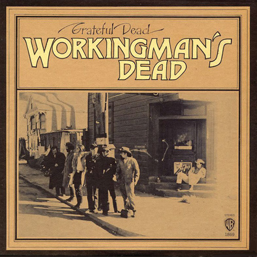
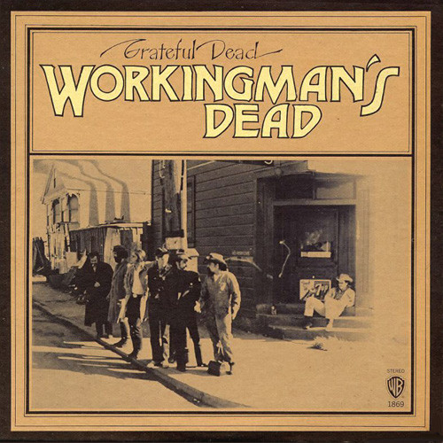

History
The Grateful Dead was an American rock band formed in 1965 in Palo Alto, California. The band is known for its eclectic style, which fused elements of rock, folk, country, jazz, bluegrass, blues, gospel, and psychedelic rock for live performances of lengthy instrumental jams and for its devoted fan base, known as "Deadheads". "Their music", writes Lenny Kaye, "touches on ground that most other groups don't even know exists". These various influences were distilled into a diverse and psychedelic whole that made the Grateful Dead "the pioneering Godfathers of the jam band world".
The band was ranked 57th by Rolling Stone magazine in its The Greatest Artists of All Time issue. The band was inducted into the Rock and Roll Hall of Fame in 1994 and a recording of their May 8, 1977, performance at Cornell University's Barton Hall was added to the National Recording Registry of the Library of Congress in 2012. The Grateful Dead have sold more than 35 million albums worldwide.
The Grateful Dead was founded in the San Francisco Bay Area amid the rise of the counterculture of the 1960s. The founding members were Jerry Garcia (lead guitar, vocals), Bob Weir (rhythm guitar, vocals), Ron "Pigpen" McKernan (keyboards, harmonica, vocals), Phil Lesh (bass, vocals), and Bill Kreutzmann (drums). Members of the Grateful Dead had played together in various San Francisco bands, including Mother McCree's Uptown Jug Champions and the Warlocks. Lesh was the last member to join the Warlocks before they became the Grateful Dead; he replaced Dana Morgan Jr., who had played bass for a few gigs. Drummer Mickey Hart and non-performing lyricist Robert Hunter joined in 1967. With the exception of McKernan, who died in 1973, and Hart, who took time off from 1971 to 1974, the core of the band stayed together for its entire 30-year history. The other official members of the band are Tom Constanten (keyboards; 1968–1970), John Perry Barlow (nonperforming lyricist; 1971–1995)[17], Keith Godchaux (keyboards; 1971–1979), Donna Godchaux (vocals; 1972–1979), Brent Mydland (keyboards, vocals; 1979–1990), and Vince Welnick (keyboards, vocals; 1990–1995). Bruce Hornsby (accordion, piano, vocals) was a touring member from 1990 to 1992, as well as a guest with the band on occasion before and after the tours.
 
